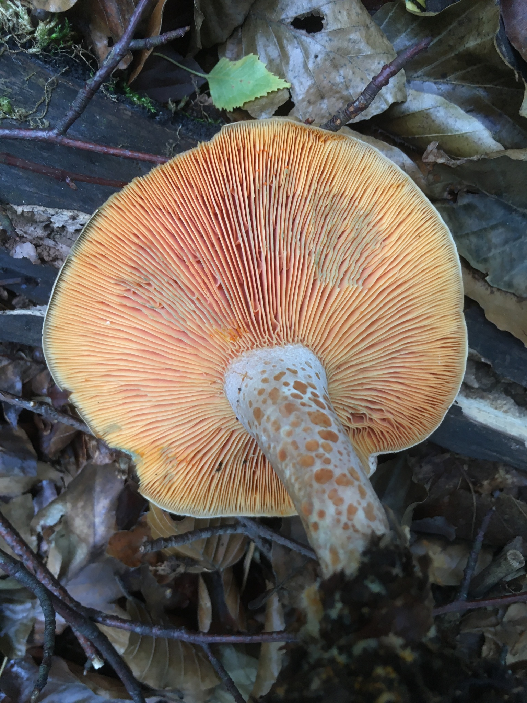
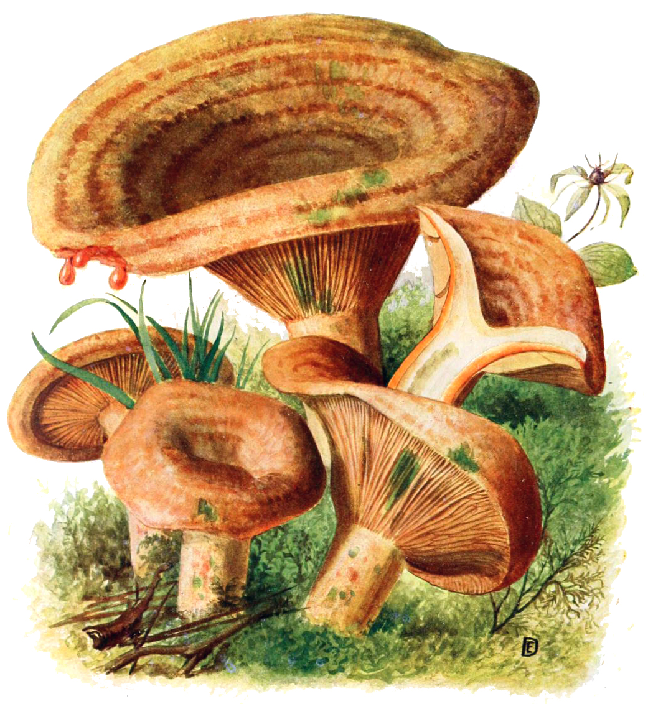
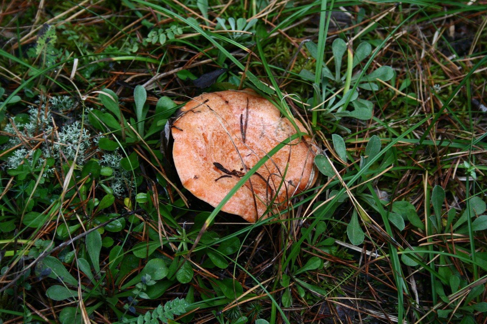
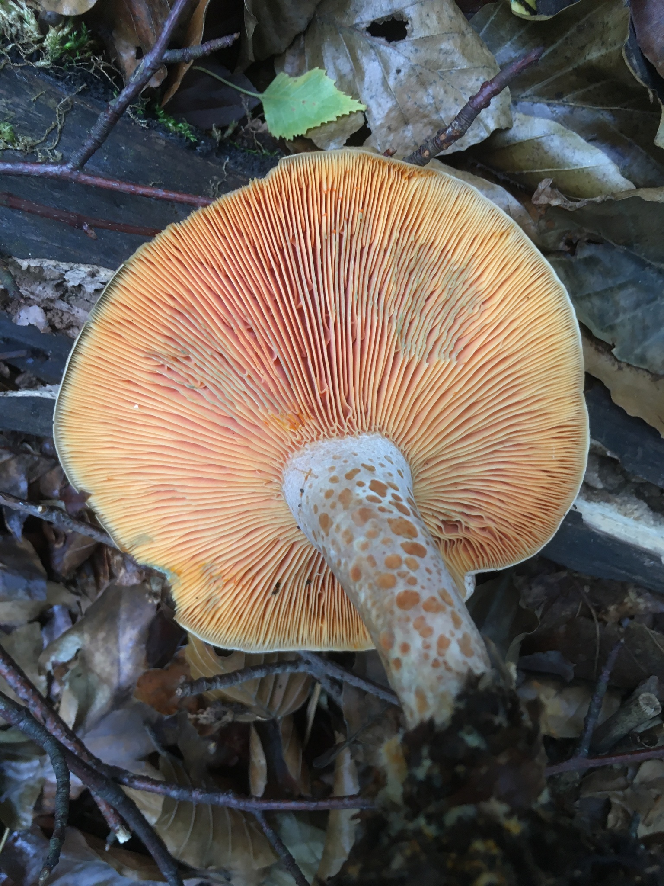
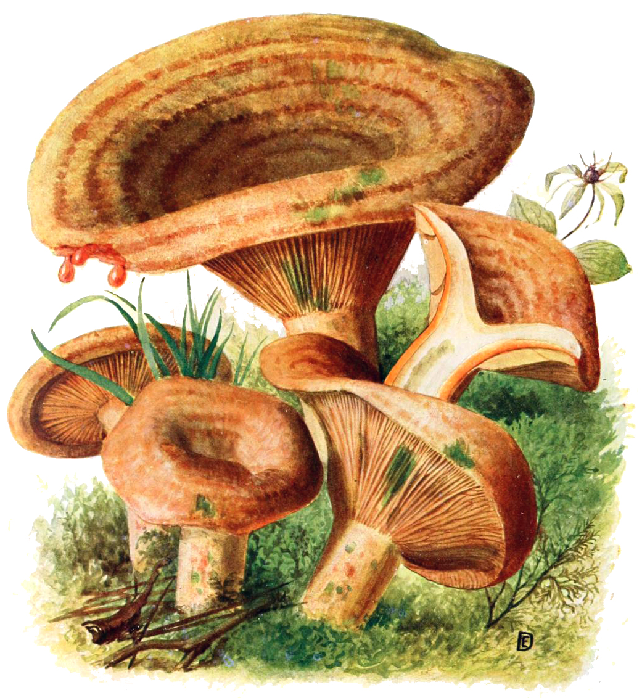
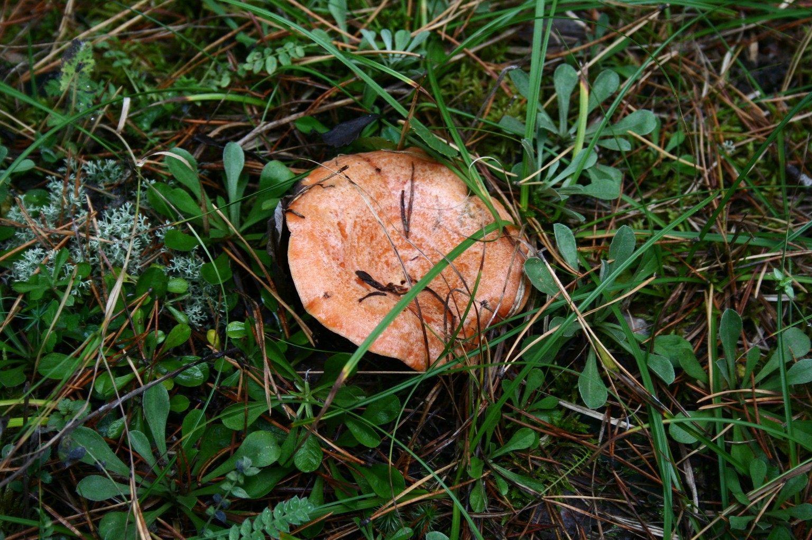

| Cecha | Opis |
|---|---|
| Kapelusz | 4 - 12cm, jasno-pomarańczowo-ochrowy, prawie kremowy, z ciemniejszymi strefami, stary czasem nieco zielonoplamisty, wypukły, wkrótce wklęsły, stary lejkowaty; brzeg długo podwinięty. |
| Blaszki | Bladopomarańczowe, mieszane, średnio gęste, prosto przyrośnięte do krótko zbiegających. |
| Trzon | Na bladopomarańczowym tle wyraźne, pomarańczowe, płytkie jamki, cylindryczny, krótki, wkrótce pusty, ku podstawie zwężony. |
| Miąższ | Bladopomarańczowy, zwarty, z wiekiem kruchy. Zapach słodkawy, owocowy, smak łagodny. |
| Mleczko | Marchwianoczerwone, później szarozielone, łagodne. |
| Zarodniki | 8,5 - 9 x 6,5 - 7µm, brodawkowane, częściowo siateczkowate. Wysyp kremowy. |

Najczęściej pojawiają się od lipca do października.

Pod sosnami, głównie na wapiennych glebach. Niezbyt częsty.

Występuje wyłącznie pod świerkami, jego mleczko przebarwia się na czerwonofioletowo.
Różni się obecnością włosków na brzegu kapelusza, piekącym smakiem oraz białym kolorem mleczka.